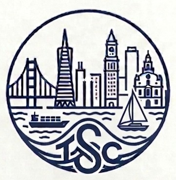

Twin Shores Capital (TSC) is a private family office focused on long-term value creation and strategic investments. TSC manages a diversified multi-asset class portfolio of direct investments, private and public funds, and public securities. We partner with exceptional managers and founders to build enduring businesses across diverse sectors, guided by a disciplined approach to capital preservation and sustainable growth.
Prior to founding TSC, Matt Levin spent over 27 years with Bain Capital, LP. He served as a Senior Advisor in its private equity business from 2016 through September 2019. From 2001 through 2015, Matt was a Managing Director in the firm's private equity business where he co-led the North America consumer products and retail industry vertical.
Reach out to inquiries@twinshorescapital.com to learn more.